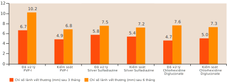
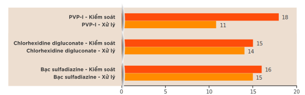

Loét do tì đè, loét tĩnh mạch chân và loét động mạch là những bệnh lý về da thường gặp và tốn kém, ảnh hưởng đến bệnh nhân trong mọi môi trường lâm sàng 1
Loét mạn tính: 2-4
- Ước tính tỷ lệ mắc bệnh trên toàn cầu là 1,51 đến 2,21 trên 1.000 người dân và dự kiến sẽ tăng do dân số già hóa trên toàn thế giới 2
- Loét tĩnh mạch chân là một trong những vết thương mãn tính phổ biến nhất xuất hiện ở chi dưới, với tỷ lệ lên tới 72% 3
- Loét do thiếu lưu thông máu là loại phổ biến thứ hai, chiếm từ 10% đến 30% loét ở chi dưới 3
- Tỷ lệ loét do tì đè dao động từ 6% đến 18,5% ở các quốc gia khác nhau trên thế giới 4
Biểu hiện lâm sàng của loét tì đè, loét chi dưới do tĩnh mạch và loét do động mạch: 1,5
| ĐẶC ĐIỂM LÂM SÀNG | LOÉT DO TÌ ĐÈ | LOÉT TĨNH MẠCH CHÂN | LOÉT ĐỘNG MẠCH CHI DƯỚI |
|---|---|---|---|
| Hình dạng |

|

|
|
| Vị trí | Các vùng xương nằm sát bề mặt cơ thể (ví dụ: xương cùng cụt, gót chân, hông) | Phía dưới đầu gối và phía trên mắt cá chân | Các chi (bao gồm ngón tay và ngón chân) |
| Đặc điểm vết thương | Rìa vết thương sâu, tăng sừng (chai cứng); rỉ nước; thường có mô hoại tử | Rìa vết thương nông, không đều; dịch tiết từ trung bình đến nhiều, thường có mô hoại tử | Đáy vết sâu, đục lỗ, không sinh hạt, thường có mô hoại tử (vết loét hoặc hoại thư); dịch tiết ít trừ khi bị nhiễm trùng (hoại thư ướt) |
| Đặc điểm vùng da xung quanh vết thương | Ẩm ướt, rỉ nước | Thay đổi do ứ trệ tĩnh mạch | Da mỏng bóng, ít lông |
| Triệu chứng đi kèm | Vết thương đau (trừ bệnh nhân tổn thương thần kinh) (ví dụ: chấn thương cột sống, biến chứng thần kinh do tiểu đường) | Cảm giác đau nhức hoặc rát bỏng, ngứa chân | Đau cách hồi (đau cơ bắp khi đi lại và giảm đau khi nghỉ ngơi) hoặc đau chân ngay cả khi đang nghỉ ngơi, thường tăng lên khi kê chân cao và giảm đau khi thả chân xuống. |
| Phát hiện qua thăm khám lâm sàng | Thay đổi về nhiệt độ, độ đàn hồi, cảm giác và màu sắc da | Phù chân, giãn tĩnh mạch, teo da, xơ mỡ da | Mạch mu bàn chân yếu hoặc không bắt được, ngón chân lạnh, ửng đỏ khi thả chi xuống, da nhợt khi kê chi lên |
Table adapted from Rayala BZ. Skin Ulcers: Surgical Management. FP Essent. 2020 ;499:11-18 and Bowers S, et al. Chronic Wounds: Evaluation and Management. Am Fam Physician. 2020;101(3):159-166
Vết thương mãn tính như loét mạch máu và loét do tì đè cho thấy quá trình lành vết thương chậm với các đặc điểm như: 6,7
Việc phát hiện và xử trí sớm nhiễm trùng vết thương có thể giúp ích cho: 6
Tải lượng vi khuẩn trong vết thương (Wound bioburden) là một yếu tố quan trọng quyết định quá trình lành vết thương 8
Giảm thiểu số lượng vi khuẩn trong vết thương là một bước quan trọng trong việc chuẩn bị nền vết thương và cá nhân hóa phác đồ điều trị 8
The TIME concept as part of the overall patient evaluation. 9 Adapted from Leaper DJ, et al. Int Wo un d J. 2012;9 (Suppl 2):1-19.
Loét mạn tính: 10
Điều trị loét mạn tính bằng kháng sinh: 10,11
- Có thể không hiệu quả trong việc điều trị loét mạn tính.
- Gắn liền với việc lạm dụng thuốc.
- Có thể làm trầm trọng tình trạng kháng kháng sinh.
- Không khuyến khích sử dụng thường qui chỉ để hỗ trợ lành vết thương.
- Chỉ nên dùng cho các trường hợp nhiễm trùng vết thương được xác nhận bằng các dấu hiệu lâm sàng, triệu chứng hoặc xét nghiệm nuôi cấy.
- Sử dụng kết hợp với các phương pháp khác như loại bỏ mô hoại tử và làm sạch vết thương.
Chiến lược điều trị loét mãn tính:
• Sử dụng kháng sinh có thể hữu ích trong: 12
- Trường hợp loét do tì đè bị nhiễm trùng.
- Ngăn ngừa lây lan nhiễm trùng.
• Tránh sử dụng kháng sinh bôi tại chỗ 8
• Các phương pháp điều trị hỗ trợ giảm đau triệu chứng như vật lý trị liệu có thể được cân nhắc 13
• Không có bằng chứng cho thấy việc sử dụng kháng sinh toàn thân giúp vết thương lành nhanh hơn 14
• Băng vết thương có chứa kháng khuẩn tại chỗ hỗ trợ kiểm soát nhiễm trùng và thúc đẩy lành thương 15,16
• Các can thiệp vào lối sống được khuyến cáo 12
Sản phẩm chứa PVP-I được coi là chất sát trùng thiết yếu trong chăm sóc vết thương và được khuyến cáo trong các hướng dẫn lâm sàng 19,20
Theo Tài liệu về Chất sát trùng Vết thương 2021 và Các Hướng dẫn của Châu Âu về Sử dụng Chất sát trùng trong Điều trị Vết thương, một chất sát trùng lý tưởng cho vết thương cần có các đặc tính: 19,20
Chất sát trùng như Diệt khuẩn phổ rộng, không gây ra kháng thuốc cho vi sinh vật.
Chống viêm
Hiệu quả trong môi trường có màng sinh học và các chất gây cản trở (ví dụ: máu, dịch tiết).
Thúc đẩy lành vết thương
Độ độc tế bào tối thiểu (ít gây hại cho tế bào sống).
Dung nạp tốt
PVP-I có tác dụng diệt khuẩn phổ rộng và nhanh chóng. Nó có thể tiêu diệt các tác nhân gây bệnh bao gồm cả MRSA (khuẩn Staphylococcus aureus kháng methicillin) chỉ trong vòng 20-30 giây tiếp xúc 19,20,21*
| Thuốc sát trùng | Kháng khuẩn vết thương | |||||
| Gram dương | Gram âm | Vi khuẩn Actinobacteria | Bào tử | Nấm | Virus | |
| Povidone-Iodine, 10% | +++ BC, LS | +++ BC, LS | ++ BC | ++ SC | +++ FC, LS | ++ VC, LS |
| Polyhexanide | +++ BC, LS | +++ BC, LS | ++ FC, IS | ++ VC, IS | ||
| Chlohexidine gluconate | +++ BC, LS | +++ BC, LS | ++ FC, IS | ++ VC, IS | ||
| Octenidine | ++ BC, LS | ++ BC, LS | ++ FC, IS | ++ VC, IS | ||
| Ethanol 70% | + BC, LS | + BC, LS | + BC, LS | + FC, LS | + VC | |
+++ Cao ++ Trung bình +Yếu NA
BC (bactericidal) = Diệt khuẩn; FC (fungicidal) = Diệt nấm; IS (incomplete spectrum) = Diệt khuẩn không phổ rộng; LS (large spectrum) = Diệt khuẩn phổ rộng; MRSA (Methicillin-resistant Staphylococcus aureus) = Staphylococcus aureus Kháng methicillin; NA (no activity) = Không có hoạt động; SC (sporicidal) = Diệt bào tử; VC (virucidal) = Diệt virusPVP-I được chứng minh là có hiệu quả kéo dài ngay cả khi có màng sinh học 21,23,24*
PVP-I là dung dịch sát trùng duy nhất cho thấy khả năng tiêu diệt hoàn toàn và hiệu quả đối với cả màng sinh học của S. aureus và P. aeruginosa chỉ trong 15 phút. 22*
Trong một nghiên cứu khác, PVP-I đã giảm tải lượng vi khuẩn và sự hình thành màng sinh học ở nồng độ ban đầu và dạng pha loãng ở tất cả các thời điểm 24*
SBPHMB = Dung dịch kháng khuẩn gốc bề mặt chứa Polyhexamethylene Biguanide; CHX = Chlorhexidine (Chlorhexidine)
SOS = Dung dịch siêu oxy hóa chứa Natri hypoclorit, Axit hypoclorit, Natri clorua và Nước oxy hóa
(*) Dựa trên nghiên cứu trong ống nghiệm
Các sản phẩm Chăm sóc vết thương có chứa PVP-I đáp ứng yêu cầu của chất khử trùng để chăm sóc vết thương 22,25-28
PVP-I vẫn là một chất sát trùng đầy hứa hẹn vì chưa ghi nhận trường hợp vi khuẩn kháng hoặc kháng chéo, không giống như các chất sát trùng khác 27
| Povidone Iodine | Chlorhexidine gluconate | Polyhexanide | Octenidine | |
| Khả năng kháng thuốc | Không quan sát thấy | S.epidermidis A.baumannii M.abscessus |
MRSA: Giảm tính nhạy cảm | S.aureus |
| Khả năng kháng chéo | Không quan sát thấy | Colistin | Daptomycin |
PVP-I có hiệu quả kháng khuẩn ổn định và tương đối ít bị ảnh hưởng bởi các chất gây nhiễu như dịch tiết vết thương. 22,25--28*
| Staphylococcus aureus | Enterococcus feacium | Pseudomonas aeruginosa | |||||||
| Không có | MEM+FBS+ | Máu | Không có | MEM+FBS+ | Máu | Không có | MEM+FBS+ | Máu | |
| PVP-I, 10% | 0.08 | 0.08 | 0.5 | 0.5 | 0.08 | 0.5 | 0.08 | 0.08 | 0.5 |
| CHG (0.05%) | 3 | 0.5 | 3 | >24 | 3 | 10 | >24 | 3 | 3 |
| OCT (0.1%) | 10 | 0.8 | 3 | 10 | 0.5 | 3 | 10 | 0.5 | 10 |
| PHMB (0.15%) | 3 | 0.5 | 3 | 0.5 | 0.08 | 5 | 0.5 | 0.5 | 3 |
• Giảm thiểu 3 log làm giảm số lượng khuẩn lạc xuống 1.000 vi khuẩn sau khi tiêu diệt 99,9% vi khuẩn ban đầu.
• Giảm thiểu 5 log làm giảm số lượng khuẩn lạc xuống 10 vi khuẩn sau khi tiêu diệt 99,999% vi khuẩn ban đầu."
PVP-I được dung nạp tốt, độc tính tối thiểu ở nồng độ diệt khuẩn tối thiểu (MBC) so với các chất sát trùng khác 19,25*
- Một chất sát trùng lý tưởng cần phải cân bằng giữa hiệu quả kháng khuẩn và độc tính trên tế bào 25
- PVP-I đã được chứng minh là vẫn duy trì được khả năng sống của tế bào ở nồng độ diệt khuẩn tối thiểu (MBC) cần thiết để giảm lượng vi khuẩn xuống 99,99% 25
| Chất sát trùng | |
| PVP - I | |
| PHMB | |
| H2O2 | |
| OCT | |
| CHG |
(Octenidine dihydrochloride); PHMB = Polyhexanide biguanide (Polyhexanide biguanide); PVP-I = Povidone-Iodine (Povidone-iod)
(*) Dựa trên nghiên cứu trong ống nghiệm
PVP - I được chứng minh lâm sàng giúp thúc đẩy quá trình lành vết thương 29-31
PVP-I hỗ trợ chữa lành và phục hồi vết thương: 31
- Tiêu diệt các yếu tố gây bệnh của vi sinh vật
- Ảnh hưởng đến các Enzyme và cytokine phá hủy mô
PVP-I ức chế thế hệ TNF-a do S.aureus gây ra từ bạch cầu trung tính ở người 31*
*Dữ liệu được số hòa từ nguồn:Mức độ TNF-a do S.aureus gây ra được giải phóng từ bạch cầu trung tính ở người ở các nồng độc khác nhau của PVP-I
Nguồn: Chuyển thể từ Konig B, et al. Da liễu. 1997;1995 Phục lục 2: 42-8
BETADINE® PVP-I mang lại tỷ lệ chữa lành tương tự như thuốc kháng sinh nhưng tỷ lệ tái phát thấp hơn; một đặc điểm quan trọng trong thời đại kháng kháng sinh ngày càng gia tăng 30
Nguồn: Trích từ Daroczy J.Dermatology. 2006;212 Phụ lục 1: 82-7
Tỷ lệ tái phát nhiễm trùng bề mặt do vi khuẩn (loét lở, viêm nang lông ở bệnh nhân dùng kháng sinh cao hơn rơ bệnh nhân dùng PVP-I (32% và 11%) 30
Nguồn: Trích từ Daroczy J.Dermatology. 2006;212 Phụ lục 1: 82-7
- Mặc dù được sử dụng rộng rãi và mở rộng, cho đến nay không có báo cáo nào về tình trạng kháng PVP-I 29
PVP-I: Một chất sát trùng hiệu quả cho thấy lợi ích lâm sàng tích cực và liên quan đến quá trình lành vết thương 29,32
PVP-I giúp đẩy nhanh lành vết loét chân so với sulfadiazine bạc và chlorhexidine 32
- PVP-I làm tăng đáng kể tỷ lệ lành vết thương (4-18%, p < 0,011) và thời gian lành vết thương giảm 2-9 tuần so với vết loét được điều trị theo nhóm đối chứng
Đặc điểm lành vết (trung vị và khoảng) của vết loét chân
Thời gian lành vết thương (tuần)
 Nguồn: Chuyển thể từ Fumal I, et al. Da liễu 2002;204 Phụ lục 1: 70-4PVP-I có độ dung nạp tốt hơn so với các chất sát trùng khác 29
So sánh các đặc tính gây dị ứng của các chất sát trùng thông dụng hiện nay
| Chất sát trùng | Viêm da tiếp xúc dị ứng | Phản ứng mày đay và/hoặc phản ứng phản vệ | Khác |
| Povidone-Iodine | Hiếm gặp | Ngoại lệ | Chưa được báo cáo |
| Chlorhexidine | Phổ biến | Được ghi nhận rõ ràng | Chưa được báo cáo |
| Octenidine | Hiếm gặp | Chưa được ghi nhận | Hoại tử mô vô khuẩn |
| Polyhexaide | Hiếm gặp | Có ghi nhận các phản ứng nặng | Chưa được báo cáo |
Xử lý vết thương, ngăn ngừa biến chứng: Ngăn ngừa nhiễm trùng, kiểm soát màng sinh học và rút ngắn thời gian lành thương với các sản phẩm có chứa PVP-l
Tài liệu tham khảo